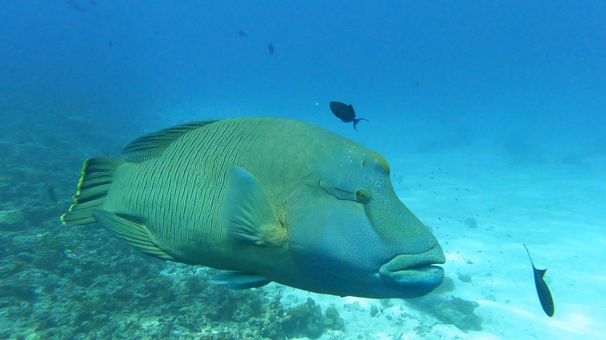
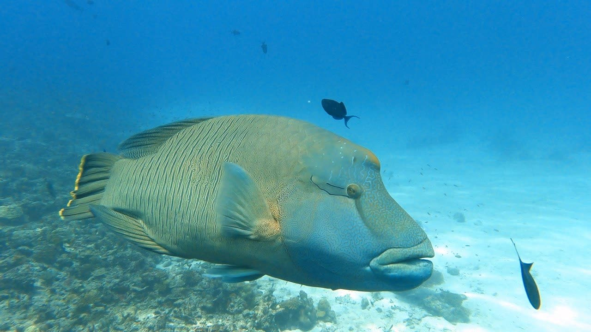
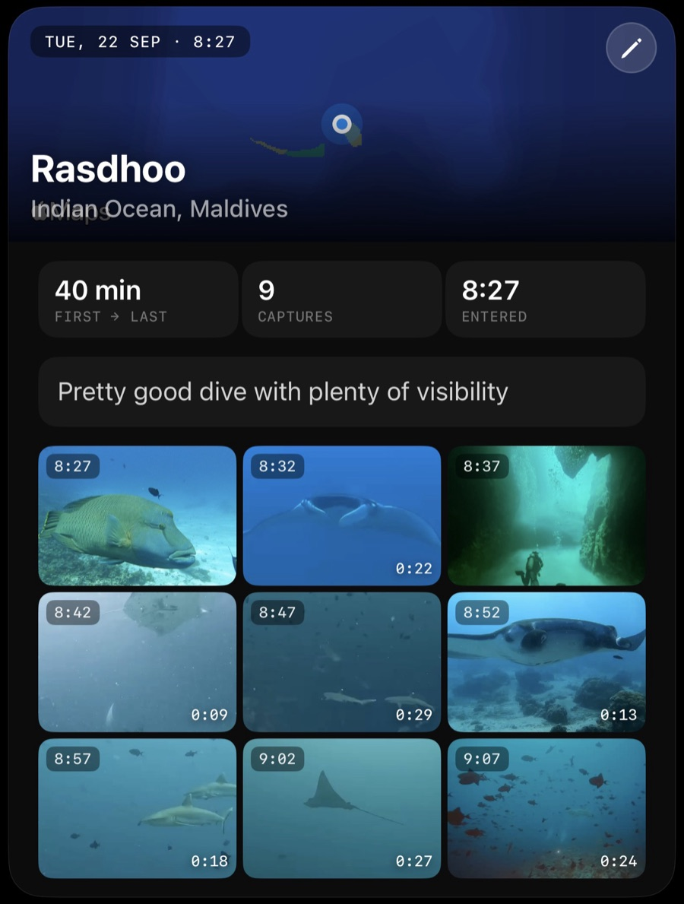

Everything you need, without looking away from the reef.
- No mode to get wrong. The shutter takes a photo while the video keeps rolling.
- All the important controls, one tap away.
- Nothing near the edge, where the membrane fights back.
- Every press answers with a haptic.
- Quick settings, another tap away. Torch, exposure and lens.
Red is the first colour the water takes.


Left, the file as the camera recorded it. Right, the same frame after one tap.
- MadiCam does underwater colour correction. Open a capture in the gallery and tap once. Photos and video.
- Hold to compare with the original.
- Save a copy, or write it back over.
Your footage, filed as a dive log.
- Grouped by dive. By time, and by site if location tagging is on.
- Add site, dive time, max depth and water temperature.
- Each dive is a page of that day's photos and videos.
